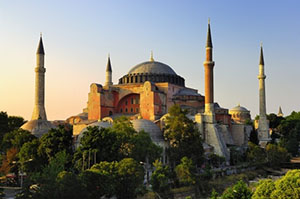

Sainte Sophie
 Sainte-Sophie est certainement le monument le plus réputé d’Istanbul. Le mot Sainte Sophie vient du grec Hagia Sophia, qui signifie « Sainte Sagesse ». En turc, Sainte-Sophie est appelé Ayasofya. Sainte-Sophie est une ancienne basilique chrétienne fondée à l’époque de Constantinople, plus précisément au VIème siècle. A l’époque du sultan Mehmed II (XVème siècle), Sainte-Sophie a été transformée en mosquée.Sainte-Sophie, mosquée ou église, n’est plus un lieu de culte depuis 1934, année où elle a été classée comme musée.Sainte-Sophie n’est plus un lieu de culte. Sa dénomination officielle est musée. En effet, à Istanbul, les lieux de culte qui ne sont plus utilisés sont désormais appelés musée. C’est le cas pour Sainte Sophie mais également pour quelques églises d’Istanbul. Sainte-Sophie est ouverte du mardi au dimanche de 9h à 17h et peut donc être visitée pendant ces heures. Attention donc à ne pas placer la visite de Sainte Sophie le lundi dans votre planning, l’accès est fermé ! Sainte-Sophie est certainement le monument le plus réputé d’Istanbul. Le mot Sainte Sophie vient du grec Hagia Sophia, qui signifie « Sainte Sagesse ». En turc, Sainte-Sophie est appelé Ayasofya. Sainte-Sophie est une ancienne basilique chrétienne fondée à l’époque de Constantinople, plus précisément au VIème siècle. A l’époque du sultan Mehmed II (XVème siècle), Sainte-Sophie a été transformée en mosquée.Sainte-Sophie, mosquée ou église, n’est plus un lieu de culte depuis 1934, année où elle a été classée comme musée.Sainte-Sophie n’est plus un lieu de culte. Sa dénomination officielle est musée. En effet, à Istanbul, les lieux de culte qui ne sont plus utilisés sont désormais appelés musée. C’est le cas pour Sainte Sophie mais également pour quelques églises d’Istanbul. Sainte-Sophie est ouverte du mardi au dimanche de 9h à 17h et peut donc être visitée pendant ces heures. Attention donc à ne pas placer la visite de Sainte Sophie le lundi dans votre planning, l’accès est fermé !


Recep Tayyip Erdoğan
Recep Tayyip Erdoğan (prononcé en turc /ˈɾɛd͡ʒɛp ˈtaːjip ˈɛɾdoan/ ; Écouter), né le 26 février 1954 à Beyoğlu, est un homme d'État turc. Il est notamment le cofondateur du Parti de la justice et du développement, Premier ministre de 2003 à 2014 et président de la République de Turquie depuis 2014. Diplômé de la faculté des sciences économiques et commerciales de l'université de Marmara, Erdoğan est joueur de football semi-professionnel de 1969 à 1982. C'est au niveau local qu'il commence son parcours politique, après avoir été élu maire d'Istanbul en 1994. Il perd ce mandat en 1998, lorsqu'il est emprisonné pendant quelques mois pour avoir lu un poème du nationaliste turc Ziya Gökalp dans la province de Siirt. En 2001, il fonde l'AKP, qui devient la première force politique turque en 2002, en obtenan t la majorité à la Grande Assemblée nationale.Nommé Premier ministre en 2003, il amende la Constitution pour que le chef de l'État soit directement élu par les citoyens, prône une intégration de la Turquie au sein de l'Union européenne et tente de réformer l'économie nationale. Populaire lorsqu'il s'engage dans le jeu politique, Recep Tayyip Erdoğan bénéficie d'une solide majorité parlementaire, confirmée lors des scrutins législatifs de 2007 et de 2011. Le régime qu'il a instauré est à partir de cette époque considéré comme étant autoritaire voire dictatorial. Il est également contesté pour des soupçons de corruption pesant sur son entourage politique et personnel. Il ne parvient par ailleurs pas à régler la question kurde.